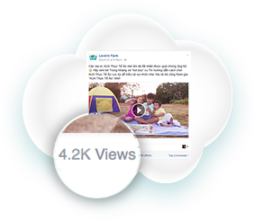

CUỘC THI VUI KUN CÙNG BÉ, MẸ TRÚNG IPHONE
Bước 1: Quay clip bé chơi cùng bộ đồ chơi KUN Thực Tế Ảo
Bước 2: Đăng video lên Facebook cá nhân của mẹ kèm hashtag #beyeu #KUNThucteao
Bước 3: Gửi (inbox) clip dự thi về fanpage Love’in Farm kèm một tấm hình của mẹ và bé.

Bước 4: Mẹ kêu gọi bạn bè vào xem clip trên Facebook của mẹ và bình chọn